← 本轮 smoke 总览traex/DeepSeek-V4.1-Flash · 0031
vision-agent · 256×144 · 4.0 FPS · 20 帧 · 状态 complete · 输出 tokens 46760
原始任务Static locked-off single-shot with fixed frame throughout filmed with constant framerate in real-time. The scene shows a realistic scientific demonstration. The scene only contains the described setup and actions. A light-colored wooden tabletop with two pipes at the edges. The blue and the yellow tennis ball roll out of the pipes and collide with the same speed.
当前保存结果
已保存候选与代码修改
这里按时间展示外部捕获的候选，每份均可单独播放。保存新版本不等于完成视觉检查；下方工具证据记录实际看过的图。
候选 01 · 2026-11-08T23:39:00.534303+00:00 · 点开播放与检查图
inspection.png

transition_check.png
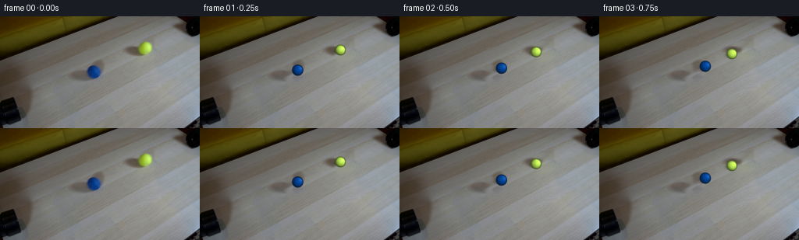
代码变化
--- 上一保存版本
+++ 本次保存版本
@@ -0,0 +1,259 @@
+from pathlib import Path
+
+import cv2
+import numpy as np
+from PIL import Image
+
+import artifact_io
+
+
+CASE_DIR = Path(__file__).resolve().parent
+WIDTH = 256
+HEIGHT = 144
+N_FRAMES = 20
+FPS = 4
+SUPERSAMPLE = 4
+
+
+def smoothstep(edge0, edge1, value):
+ x = np.clip((value - edge0) / (edge1 - edge0), 0.0, 1.0)
+ return x * x * (3.0 - 2.0 * x)
+
+
+def make_clean_plate(frame):
+ """Remove the two initial balls and their contact shadows from the table."""
+ mask = np.zeros((HEIGHT, WIDTH), dtype=np.uint8)
+ cv2.ellipse(mask, (120, 72), (10, 10), 0, 0, 360, 255, -1)
+ cv2.ellipse(mask, (185, 41), (10, 10), 0, 0, 360, 255, -1)
+ cv2.ellipse(mask, (116, 76), (10, 6), -18, 0, 360, 255, -1)
+ cv2.ellipse(mask, (181, 46), (11, 6), -18, 0, 360, 255, -1)
+
+ # Inpainting supplies the low frequencies; nearby wood grain restores the
+ # fine diagonal texture that a plain inpaint would otherwise smear away.
+ plate = cv2.inpaint(frame, mask, 4, cv2.INPAINT_TELEA).astype(np.float32)
+ smooth = cv2.GaussianBlur(plate, (0, 0), 5.0)
+ detail = plate - smooth
+ shifted = np.roll(detail, 18, axis=0)
+ shifted[:18] = detail[:18]
+ weight = cv2.GaussianBlur((mask > 0).astype(np.float32), (0, 0), 2.0)
+ plate += shifted * weight[..., None] * 0.72
+ return np.clip(plate, 0, 255).astype(np.uint8)
+
+
+def rotate_vectors(vectors, axis, angle):
+ """Rotate an (..., 3) vector array about a unit axis."""
+ axis = np.asarray(axis, dtype=np.float32)
+ axis = axis / np.linalg.norm(axis)
+ cos_a = np.cos(angle)
+ sin_a = np.sin(angle)
+ cross = np.cross(axis, vectors)
+ dot = np.sum(vectors * axis, axis=-1, keepdims=True)
+ return vectors * cos_a + cross * sin_a + axis * dot * (1.0 - cos_a)
+
+
+def render_ball(cx, cy, radius, base_rgb, phase, roll_direction, color_name):
+ """Render one anti-aliased, shaded tennis ball in a small RGBA patch."""
+ half = 13
+ left = int(np.floor(cx)) - half
+ top = int(np.floor(cy)) - half
+ size = half * 2 + 1
+ hi_size = size * SUPERSAMPLE
+ px = (left * SUPERSAMPLE + np.arange(hi_size) + 0.5) / SUPERSAMPLE
+ py = (top * SUPERSAMPLE + np.arange(hi_size) + 0.5) / SUPERSAMPLE
+ qx, qy = np.meshgrid(px - cx, py - cy)
+
+ rr2 = (qx * qx + qy * qy) / (radius * radius)
+ rr = np.sqrt(rr2)
+ inside = np.clip(1.0 - rr2, 0.0, 1.0)
+ nz = np.sqrt(inside)
+ normal = np.stack((qx / radius, qy / radius, nz), axis=-1)
+
+ # Roll the ball's surface pattern while keeping its projected silhouette fixed.
+ travel = phase * radius
+ d = np.asarray(roll_direction, dtype=np.float32)
+ spin_axis = np.array([-d[1], d[0], 0.0], dtype=np.float32)
+ if np.linalg.norm(spin_axis) < 1e-6:
+ spin_axis = np.array([0.0, 1.0, 0.0], dtype=np.float32)
+ texture_normal = rotate_vectors(normal, spin_axis, travel / radius)
+ tn = texture_normal
+
+ # Broad diffuse light from the upper-right, matching the supplied frame.
+ light = np.array([0.56, -0.33, 0.76], dtype=np.float32)
+ light /= np.linalg.norm(light)
+ diffuse = np.clip(np.sum(normal * light, axis=-1), 0.0, 1.0)
+ shade = 0.52 + 0.53 * diffuse + 0.055 * nz
+ shade *= 0.80 + 0.20 * np.sqrt(np.clip(nz, 0.0, 1.0))
+ shade -= 0.075 * np.clip(qy / radius, 0.0, 1.0)
+
+ # A restrained curved seam and fine felt variation make the roll readable.
+ longitude = np.arctan2(tn[..., 0], tn[..., 2] + 0.14)
+ latitude = np.arcsin(np.clip(tn[..., 1], -1.0, 1.0))
+ seam_wave = np.sin(2.0 * longitude + 1.15 * np.sin(latitude))
+ seam = 1.0 - 0.13 * np.exp(-((np.abs(seam_wave) - 0.055) / 0.050) ** 2)
+ seam *= smoothstep(0.15, 0.75, nz)
+ felt = (
+ 0.55 * np.sin(18.0 * tn[..., 0] + 9.0 * tn[..., 1] + 4.0 * tn[..., 2])
+ + 0.30 * np.sin(31.0 * tn[..., 0] - 23.0 * tn[..., 1] + 8.0 * tn[..., 2])
+ + 0.15 * np.sin(47.0 * tn[..., 2] + 13.0 * tn[..., 0])
+ )
+ texture = seam * (1.0 + 0.030 * felt)
+
+ rgb = base_rgb.reshape(1, 1, 3) * shade[..., None] * texture[..., None]
+ spec = np.power(np.clip(np.sum(normal * light, axis=-1), 0.0, 1.0), 16.0)
+ if color_name == "yellow":
+ rgb += spec[..., None] * np.array([38.0, 31.0, 21.0])
+ fuzz_rgb = np.array([205.0, 247.0, 122.0])
+ else:
+ rgb += spec[..., None] * np.array([20.0, 30.0, 39.0])
+ fuzz_rgb = np.array([54.0, 93.0, 159.0])
+
+ fuzz = smoothstep(0.76, 1.00, rr)
+ rgb = rgb * (1.0 - 0.30 * fuzz[..., None]) + fuzz_rgb * (0.30 * fuzz[..., None])
+ alpha = smoothstep(1.045, 0.93, rr)
+ alpha *= (rr < 1.05)
+
+ premul = np.clip(rgb, 0, 255) * alpha[..., None]
+ premul_small = cv2.resize(
+ premul, (size, size), interpolation=cv2.INTER_AREA
+ )
+ alpha_small = cv2.resize(
+ alpha.astype(np.float32), (size, size), interpolation=cv2.INTER_AREA
+ )
+ return left, top, premul_small.astype(np.float32), alpha_small.astype(np.float32)
+
+
+def add_shadow(image, cx, cy, radius, strength):
+ """Composite a soft cast shadow and a tight contact-occlusion patch."""
+ half = 14
+ left = int(np.floor(cx)) - half
+ top = int(np.floor(cy)) - half
+ size = half * 2 + 1
+ hi_size = size * SUPERSAMPLE
+ px = (left * SUPERSAMPLE + np.arange(hi_size) + 0.5) / SUPERSAMPLE
+ py = (top * SUPERSAMPLE + np.arange(hi_size) + 0.5) / SUPERSAMPLE
+ qx, qy = np.meshgrid(px - cx, py - cy)
+
+ # Light comes from the upper-right, so the visible cast shadow lies below-left.
+ ex = (qx + 2.4) / (radius * 1.18)
+ ey = (qy - 2.0) / (radius * 0.56)
+ cast = np.exp(-1.9 * (ex * ex + ey * ey) ** 1.35)
+ cast *= strength
+
+ ax = qx / (radius * 0.86)
+ ay = (qy - 1.1) / (radius * 0.27)
+ contact = np.exp(-2.2 * (ax * ax + ay * ay) ** 1.25) * 0.16
+ shadow = np.clip(cast + contact, 0.0, 0.42)
+ shadow_small = cv2.resize(
+ shadow.astype(np.float32), (size, size), interpolation=cv2.INTER_AREA
+ )
+
+ x0 = max(0, left)
+ y0 = max(0, top)
+ x1 = min(WIDTH, left + size)
+ y1 = min(HEIGHT, top + size)
+ sx0 = x0 - left
+ sy0 = y0 - top
+ patch = shadow_small[sy0 : sy0 + (y1 - y0), sx0 : sx0 + (x1 - x0)]
+ region = image[y0:y1, x0:x1].astype(np.float32)
+ image[y0:y1, x0:x1] = np.clip(region * (1.0 - patch[..., None]), 0, 255).astype(
+ np.uint8
+ )
+
+
+def composite_ball(image, cx, cy, radius, base_rgb, phase, roll_direction, color_name):
+ left, top, premul, alpha = render_ball(
+ cx, cy, radius, base_rgb, phase, roll_direction, color_name
+ )
+ size = premul.shape[0]
+ x0 = max(0, left)
+ y0 = max(0, top)
+ x1 = min(WIDTH, left + size)
+ y1 = min(HEIGHT, top + size)
+ sx0 = x0 - left
+ sy0 = y0 - top
+ patch_rgb = premul[sy0 : sy0 + (y1 - y0), sx0 : sx0 + (x1 - x0)]
+ patch_a = alpha[sy0 : sy0 + (y1 - y0), sx0 : sx0 + (x1 - x0)]
+ region = image[y0:y1, x0:x1].astype(np.float32)
+ image[y0:y1, x0:x1] = np.clip(
+ region * (1.0 - patch_a[..., None]) + patch_rgb, 0, 255
+ ).astype(np.uint8)
+
+
+def ball_positions(frame_index):
+ blue_start = np.array([120.3, 71.7], dtype=np.float32)
+ yellow_start = np.array([185.5, 41.0], dtype=np.float32)
+ blue_radius = 7.35
+ yellow_radius = 7.0
+
+ delta = yellow_start - blue_start
+ distance = float(np.linalg.norm(delta))
+ direction = delta / distance
+ midpoint = (blue_start + yellow_start) * 0.5
+ blue_contact = midpoint - direction * blue_radius
+ yellow_contact = midpoint + direction * yellow_radius
+
+ speed = 23.0
+ collision_time = (distance - blue_radius - yellow_radius) / (2.0 * speed)
+ t = frame_index / FPS
+ if t <= collision_time:
+ blue = blue_start + direction * speed * t
+ yellow = yellow_start - direction * speed * t
+ blue_phase = speed * t / blue_radius
+ yellow_phase = speed * t / yellow_radius
+ blue_direction = direction
+ yellow_direction = -direction
+ else:
+ dt = t - collision_time
+ blue = blue_contact - direction * speed * dt
+ yellow = yellow_contact + direction * speed * dt
+ blue_phase = (speed * collision_time - speed * dt) / blue_radius
+ yellow_phase = (speed * collision_time - speed * dt) / yellow_radius
+ blue_direction = -direction
+ yellow_direction = direction
+ return (
+ (blue, blue_radius, blue_phase, blue_direction),
+ (yellow, yellow_radius, yellow_phase, yellow_direction),
+ )
+
+
+def generate_frames():
+ first_frame = np.array(Image.open(CASE_DIR / "first_frame.png").convert("RGB"))
+ assert first_frame.shape == (HEIGHT, WIDTH, 3)
+ clean_plate = make_clean_plate(first_frame)
+
+ frames = [first_frame.copy()]
+ blue_rgb = np.array([5.0, 70.0, 155.0], dtype=np.float32)
+ yellow_rgb = np.array([191.0, 239.0, 88.0], dtype=np.float32)
+
+ for index in range(1, N_FRAMES):
+ frame = clean_plate.copy()
+ (blue, blue_radius, blue_phase, blue_direction), (
+ yellow,
+ yellow_radius,
+ yellow_phase,
+ yellow_direction,
+ ) = ball_positions(index)
+
+ add_shadow(frame, blue[0], blue[1], blue_radius, 0.20)
+ add_shadow(frame, yellow[0], yellow[1], yellow_radius, 0.26)
+
+ # Draw the ball nearer the camera last so the contact ordering is natural.
+ balls = [
+ (yellow[0], yellow[1], yellow_radius, yellow_rgb, yellow_phase, yellow_direction, "yellow"),
+ (blue[0], blue[1], blue_radius, blue_rgb, blue_phase, blue_direction, "blue"),
+ ]
+ for cx, cy, radius, rgb, phase, direction, name in sorted(
+ balls, key=lambda item: item[1]
+ ):
+ composite_ball(frame, cx, cy, radius, rgb, phase, direction, name)
+ frames.append(frame)
+ return np.asarray(frames, dtype=np.uint8)
+
+
+if __name__ == "__main__":
+ generated = generate_frames()
+ assert generated.shape == (N_FRAMES, HEIGHT, WIDTH, 3)
+ assert generated.dtype == np.uint8
+ original = np.array(Image.open(CASE_DIR / "first_frame.png").convert("RGB"))
+ assert np.array_equal(generated[0], original)
+ artifact_io.save(generated, CASE_DIR)
候选 02 · 2026-11-08T23:39:44.516838+00:00 · 点开播放与检查图
inspection.png

transition_check.png

代码变化
--- 上一保存版本
+++ 本次保存版本
@@ -81,9 +81,9 @@
light = np.array([0.56, -0.33, 0.76], dtype=np.float32)
light /= np.linalg.norm(light)
diffuse = np.clip(np.sum(normal * light, axis=-1), 0.0, 1.0)
- shade = 0.52 + 0.53 * diffuse + 0.055 * nz
- shade *= 0.80 + 0.20 * np.sqrt(np.clip(nz, 0.0, 1.0))
- shade -= 0.075 * np.clip(qy / radius, 0.0, 1.0)
+ shade = 0.54 + 0.51 * diffuse + 0.045 * nz
+ shade *= 0.82 + 0.18 * np.sqrt(np.clip(nz, 0.0, 1.0))
+ shade -= 0.055 * np.clip(qy / radius, 0.0, 1.0)
# A restrained curved seam and fine felt variation make the roll readable.
longitude = np.arctan2(tn[..., 0], tn[..., 2] + 0.14)
@@ -109,8 +109,8 @@
fuzz = smoothstep(0.76, 1.00, rr)
rgb = rgb * (1.0 - 0.30 * fuzz[..., None]) + fuzz_rgb * (0.30 * fuzz[..., None])
- alpha = smoothstep(1.045, 0.93, rr)
- alpha *= (rr < 1.05)
+ alpha = smoothstep(1.035, 0.90, rr)
+ alpha *= (rr < 1.04)
premul = np.clip(rgb, 0, 255) * alpha[..., None]
premul_small = cv2.resize(
@@ -180,10 +180,10 @@
def ball_positions(frame_index):
- blue_start = np.array([120.3, 71.7], dtype=np.float32)
- yellow_start = np.array([185.5, 41.0], dtype=np.float32)
- blue_radius = 7.35
- yellow_radius = 7.0
+ blue_start = np.array([120.0, 71.7], dtype=np.float32)
+ yellow_start = np.array([185.0, 41.0], dtype=np.float32)
+ blue_radius = 7.6
+ yellow_radius = 7.4
delta = yellow_start - blue_start
distance = float(np.linalg.norm(delta))
@@ -192,7 +192,7 @@
blue_contact = midpoint - direction * blue_radius
yellow_contact = midpoint + direction * yellow_radius
- speed = 23.0
+ speed = 30.8
collision_time = (distance - blue_radius - yellow_radius) / (2.0 * speed)
t = frame_index / FPS
if t <= collision_time:
候选 03 · 2026-11-08T23:39:46.400443+00:00 · 点开播放与检查图
inspection.png
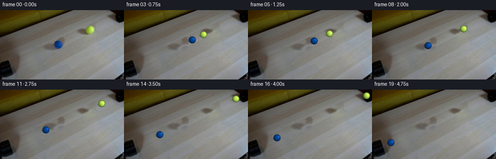
transition_check.png
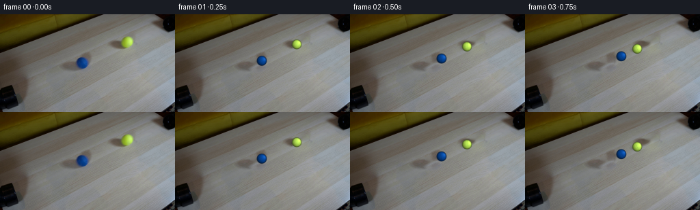
代码变化
代码未变化；重新保存了产物。
候选 04 · 2026-11-08T23:39:59.538339+00:00 · 点开播放与检查图
inspection.png
transition_check.png

代码变化
--- 上一保存版本
+++ 本次保存版本
@@ -192,7 +192,8 @@
blue_contact = midpoint - direction * blue_radius
yellow_contact = midpoint + direction * yellow_radius
- speed = 30.8
+ # Land the collision exactly on frame 04 at the native 4 fps cadence.
+ speed = (distance - blue_radius - yellow_radius) / 2.0
collision_time = (distance - blue_radius - yellow_radius) / (2.0 * speed)
t = frame_index / FPS
if t <= collision_time:
候选 05 · 2026-11-08T23:40:53.260911+00:00 · 点开播放与检查图
inspection.png

transition_check.png
代码变化
--- 上一保存版本
+++ 本次保存版本
@@ -199,18 +199,17 @@
if t <= collision_time:
blue = blue_start + direction * speed * t
yellow = yellow_start - direction * speed * t
- blue_phase = speed * t / blue_radius
- yellow_phase = speed * t / yellow_radius
blue_direction = direction
yellow_direction = -direction
else:
dt = t - collision_time
blue = blue_contact - direction * speed * dt
yellow = yellow_contact + direction * speed * dt
- blue_phase = (speed * collision_time - speed * dt) / blue_radius
- yellow_phase = (speed * collision_time - speed * dt) / yellow_radius
blue_direction = -direction
yellow_direction = direction
+ # The collision reverses translation, not the balls' existing angular momentum.
+ blue_phase = speed * t / blue_radius
+ yellow_phase = speed * t / yellow_radius
return (
(blue, blue_radius, blue_phase, blue_direction),
(yellow, yellow_radius, yellow_phase, yellow_direction),
候选 06 · 2026-11-08T23:41:48.685091+00:00 · 点开播放与检查图
inspection.png

transition_check.png

代码变化
--- 上一保存版本
+++ 本次保存版本
@@ -199,17 +199,18 @@
if t <= collision_time:
blue = blue_start + direction * speed * t
yellow = yellow_start - direction * speed * t
- blue_direction = direction
- yellow_direction = -direction
+ blue_phase = speed * t / blue_radius
+ yellow_phase = speed * t / yellow_radius
else:
dt = t - collision_time
blue = blue_contact - direction * speed * dt
yellow = yellow_contact + direction * speed * dt
- blue_direction = -direction
- yellow_direction = direction
- # The collision reverses translation, not the balls' existing angular momentum.
- blue_phase = speed * t / blue_radius
- yellow_phase = speed * t / yellow_radius
+ blue_phase = speed * t / blue_radius
+ yellow_phase = speed * t / yellow_radius
+ # A short, nearly frictionless impact reverses translation without
+ # instantaneously reversing either ball's angular momentum.
+ blue_direction = direction
+ yellow_direction = -direction
return (
(blue, blue_radius, blue_phase, blue_direction),
(yellow, yellow_radius, yellow_phase, yellow_direction),
候选 07 · 2026-11-08T23:41:50.513900+00:00 · 点开播放与检查图
inspection.png
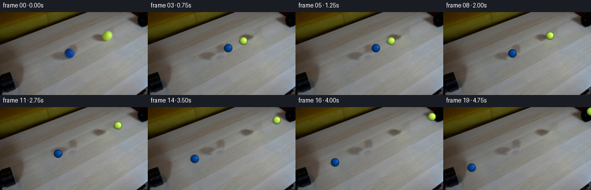
transition_check.png

代码变化
代码未变化；重新保存了产物。
可观测工具行为
命令 1 · 2026-11-08T23:34:12.400863+00:00/bin/bash -c "pwd && rg --files -g '"'!*.mp4'"' -g '"'!*.webm'"' -g '"'!*.mov'"' | sed -n '1,200p'"
exit 0 命令 2 · 2026-11-08T23:34:12.514917+00:00/bin/bash -c "sed -n '1,240p' prompt.txt"
exit 0 命令 3 · 2026-11-08T23:34:12.810219+00:00/bin/bash -c "sed -n '1,280p' GENERATION_RULES.md"
exit 0 命令 4 · 2026-11-08T23:34:12.988701+00:00/bin/bash -c "find . -maxdepth 2 -type f -printf '%p\\n' | sort | sed -n '1,240p' && printf '\\n--- dirs ---\\n' && find . -maxdepth 2 -type d -printf '%p\\n' | sort | sed -n '1,160p'"
exit 0 命令 5 · 2026-11-08T23:34:21.933374+00:00/bin/bash -c "sed -n '1,260p' artifact_io.py"
exit 0 命令 6 · 2026-11-08T23:34:22.195995+00:00/bin/bash -c "sed -n '1,280p' player_template.html"
exit 0 命令 7 · 2026-11-08T23:34:22.505242+00:00/bin/bash -c "python - <<'PY'
from PIL import Image
im=Image.open('first_frame.png')
print(im.mode, im.size)
print(im.getpixel((0,0)), im.getpixel((128,72)), im.getpixel((255,143)))
PY"exit 0 命令 8 · 2026-11-08T23:34:39.192686+00:00/bin/bash -c "python - <<'PY'
from PIL import Image
im=Image.open('first_frame.png')
im.crop((90,30,215,90)).resize((1000,480),Image.Resampling.NEAREST).save('.tmp/balls_zoom.png')
PY"exit 0 命令 9 · 2026-11-08T23:34:54.684218+00:00/bin/bash -c "python - <<'PY'
from PIL import Image
im=Image.open('first_frame.png')
im.crop((70,20,220,105)).resize((1200,680),Image.Resampling.NEAREST).save('.tmp/scene_zoom.png')
PY"exit 0 命令 10 · 2026-11-08T23:35:02.269350+00:00/bin/bash -c "python - <<'PY'
from PIL import Image
import numpy as np
im=np.array(Image.open('first_frame.png')).astype(int)
for name,(cx,cy) in {'blue':(120,69),'yellow':(186,39)}.items():
print('\\n',name)
for y in range(cy-14,cy+17,2):
s=''
for x in range(cx-16,cx+17,2):
r,g,b=im[y,x]
if name=='blue': v=(b-r)+(b-g)
else: v=(g-b)+(r-b)
s += ' .:+*#@'[min(6,max(0,v//25))]
print(s)
PY"exit 0 命令 11 · 2026-11-08T23:35:11.911876+00:00/bin/bash -c "python - <<'PY'
for m in ['cv2','scipy','skimage']:
try:
x=__import__(m); print(m,'yes',getattr(x,'__version__',''))
except Exception as e: print(m,'no')
PY"
exit 0 命令 12 · 2026-11-08T23:35:16.325037+00:00/bin/bash -c "python - <<'PY'
import cv2
print(cv2.data.haarcascades)
PY"
exit 0 命令 13 · 2026-11-08T23:35:21.070452+00:00/bin/bash -c "python - <<'PY'
from PIL import Image
import numpy as np
im=np.array(Image.open('first_frame.png')).astype(int)
for name,(cx,cy) in {'blue':(120,69),'yellow':(186,39)}.items():
print('\\n',name)
for y in range(cy-11,cy+12):
s=''
for x in range(cx-14,cx+15):
r,g,b=im[y,x]
if name=='blue': v=(b-r)+(b-g)
else: v=(g-b)+(r-b)
s += ' .:+*#@'[min(6,max(0,v//18))]
print(f'{y:3d}',s)
PY"exit 0 命令 14 · 2026-11-08T23:35:25.361108+00:00/bin/bash -c "python - <<'PY'
from PIL import Image
import numpy as np
im=np.array(Image.open('first_frame.png'))
for y in [0,10,20,30,40,50,60,70,80,90,100,110,120,130,140,143]:
print(y, [tuple(im[y,x]) for x in [0,20,40,60,80,100,120,140,160,180,200,220,240,255]])
PY"exit 0 命令 15 · 2026-11-08T23:35:30.642522+00:00/bin/bash -c "python - <<'PY'
import cv2, numpy as np
im=cv2.imread('first_frame.png')
hsv=cv2.cvtColor(im,cv2.COLOR_BGR2HSV)
for n,lo,hi in [('blue',(95,100,40),(125,255,255)),('yellow',(25,100,70),(40,255,255))]:
m=cv2.inRange(hsv,np.array(lo),np.array(hi))
ys,xs=np.where(m>0)
print(n,'bbox',xs.min(),ys.min(),xs.max(),ys.max(),'n',len(xs),'cent',xs.mean(),ys.mean())
cv2.imwrite('.tmp/'+n+'_mask.png',m)
PY"exit 0 命令 16 · 2026-11-08T23:35:35.646390+00:00/bin/bash -c "python - <<'PY'
import cv2, numpy as np
im=cv2.imread('first_frame.png'); hsv=cv2.cvtColor(im,cv2.COLOR_BGR2HSV)
for n,lo,hi in [('blue',(95,150,70),(125,255,255)),('yellow',(25,150,130),(40,255,255))]:
m=cv2.inRange(hsv,np.array(lo),np.array(hi)); m[:15]=0;m[:, :10]=0;m[:,250:]=0
# restrict component nearest expected
num,l,st,cent=cv2.connectedComponentsWithStats(m)
for i in range(1,num):
if st[i,4]>10: print(n,i,st[i].tolist(),cent[i])
cv2.imwrite('.tmp/'+n+'_mask2.png',m)
PY"exit 0 命令 17 · 2026-11-08T23:35:40.610816+00:00/bin/bash -c "python - <<'PY'
from PIL import Image
import numpy as np
im=np.array(Image.open('first_frame.png')).astype(float)
for name,(cx,cy) in {'blue':(120,71.5),'yellow':(185,41)}.items():
yy,xx=np.mgrid[0:144,0:256]; r=np.hypot(xx-cx,yy-cy)
print(name)
for rad in np.arange(2,12,.5):
m=(r>=rad)&(r<rad+.5)
print(f'{rad:4.1f}', np.median(im[m],axis=0).round(1), 'n',m.sum())
PY"exit 0 命令 18 · 2026-11-08T23:35:44.864900+00:00/bin/bash -c "python - <<'PY'
from PIL import Image
im=Image.open('first_frame.png')
for name,box in [('pipeL',(0,80,50,144)),('pipeR',(220,0,256,50))]:
im.crop(box).resize(((box[2]-box[0])*10,(box[3]-box[1])*10),Image.Resampling.NEAREST).save('.tmp/'+name+'.png')
PY"exit 0 命令 19 · 2026-11-08T23:35:55.374235+00:00/bin/bash -c "python - <<'PY'
from PIL import Image
import numpy as np
im=np.array(Image.open('first_frame.png')).astype(float)
# row 0 table starts around x? print compact per x
for y in [0,5,10,15,20,25,30,35,40,45]:
vals=[]
for x in range(0,256,4):
r,g,b=im[y,x]
if y<15 and x<150: continue
vals.append(f'{x}:{int(r)},{int(g)},{int(b)}')
print('y',y,' '.join(vals))
PY"exit 0 命令 20 · 2026-11-08T23:36:19.621666+00:00/bin/bash -c "python - <<'PY'
from PIL import Image
import numpy as np
im=np.array(Image.open('first_frame.png')).astype(float)
for name,(cx,cy,rad) in {'blue':(120,71.5,7.3),'yellow':(185,41,7.0)}.items():
print(name)
for dy in [-5,-2.5,0,2.5,5]:
out=[]
for dx in [-5,-2.5,0,2.5,5]:
if dx*dx+dy*dy > rad*rad: out.append('----'); continue
p=im[round(cy+dy),round(cx+dx)].astype(int)
out.append(','.join(map(str,p)))
print(dy,out)
PY"exit 0 命令 21 · 2026-11-08T23:36:24.308521+00:00/bin/bash -c "python - <<'PY'
from PIL import Image
import numpy as np
im=np.array(Image.open('first_frame.png')).astype(float)
for name,(cx,cy,rad) in {'blue':(120,71.5,7.3),'yellow':(185,41,7.0)}.items():
print(name)
for rad2 in np.arange(.2,7.5,.6):
m=np.zeros(im.shape[:2],bool)
yy,xx=np.mgrid[:144,:256]; r=np.hypot(xx-cx,yy-cy); m=(r>=rad2)&(r<rad2+.6)
p=np.median(im[m],axis=0)
print(f'{rad2:.1f}',p.astype(int))
PY"exit 0 命令 22 · 2026-11-08T23:36:29.374980+00:00/bin/bash -c "python - <<'PY'
from PIL import Image
import numpy as np
im=np.array(Image.open('first_frame.png')).astype(float)
# top table edge fit candidate threshold bright gray per x
pts=[]
for x in range(0,256):
col=im[:,x]
bright=np.where((col[:,0]>80)&(abs(col[:,0]-col[:,1])<20)&(col[:,2]<col[:,0]+30))[0]
# top table starts after first dark, pick runs
if len(bright): pts.append((x,bright[0]))
print(pts[::20])
PY"exit 0 命令 23 · 2026-11-08T23:36:33.776272+00:00/bin/bash -c "python - <<'PY'
from PIL import Image
import numpy as np
im=np.array(Image.open('first_frame.png')).astype(int)
for x in [50,70,90,110,130,150,170,190,210]:
ys=[]
for y in range(143):
r,g,b=im[y,x]
if r>75 and g>70 and b>65 and max(abs(r-g),abs(g-b))<25: ys.append(y)
print(x,ys[:10])
PY"exit 0 命令 24 · 2026-11-08T23:36:38.356313+00:00/bin/bash -c "python - <<'PY'
from PIL import Image
import numpy as np
im=np.array(Image.open('first_frame.png')).astype(float)
pts=[]
for x in range(50,150):
col=im[:,x]
for y in range(0,100):
r,g,b=col[y]
if r>80 and g>75 and b>70 and max(abs(r-g),abs(g-b))<25:
pts.append((x,y));break
x=np.array([p[0] for p in pts]); y=np.array([p[1] for p in pts])
a,b=np.polyfit(x,y,1); print(a,b,'at0',b,'at256',a*256+b)
PY"exit 0 命令 25 · 2026-11-08T23:37:01.828689+00:00/bin/bash -c "python - <<'PY'
import cv2, numpy as np
from PIL import Image
im=cv2.imread('first_frame.png')
mask=np.zeros(im.shape[:2],np.uint8)
cv2.ellipse(mask,(120,72),(10,10),0,0,360,255,-1)
cv2.ellipse(mask,(185,41),(10,10),0,0,360,255,-1)
# include shadows likely to lower-right
cv2.ellipse(mask,(125,78),(8,5),-10,0,360,255,-1)
cv2.ellipse(mask,(190,46),(8,5),-10,0,360,255,-1)
for r in [2,3,5,7]:
bg=cv2.inpaint(im,mask,r,cv2.INPAINT_TELEA)
cv2.imwrite(f'.tmp/bg{r}.png',bg)
cv2.imwrite('.tmp/mask.png',mask)
PY"exit 0 命令 26 · 2026-11-08T23:37:09.783759+00:00/bin/bash -c "python - <<'PY'
from PIL import Image
import numpy as np
im=np.array(Image.open('first_frame.png')).astype(float)
# center each ball from threshold centroids; fit RGB gradient disk + soft edge
for name,(cx,cy) in {'blue':(120,71.5),'yellow':(185,41.0)}.items():
yy,xx=np.mgrid[0:144,0:256]
dx=xx-cx;dy=yy-cy;r=np.hypot(dx,dy)
m=r<6.5
A=np.c_[np.ones(m.sum()),dx[m]/7,dy[m]/7,(dx[m]*dx[m]+dy[m]*dy[m])/49]
coef=np.linalg.lstsq(A,im[m],rcond=None)[0]
print(name,'coef',coef.round(2))
for dy0 in [-4,0,4]:
print([tuple(np.round(coef[0]+coef[1]*dx/7+coef[2]*dy0/7+coef[3]*(dx*dx+dy0*dy0)/49)).astype(int) for dx in [-4,0,4]])
PY"exit 1 命令 27 · 2026-11-08T23:37:14.802786+00:00/bin/bash -c "python - <<'PY'
from PIL import Image
import numpy as np
im=np.array(Image.open('first_frame.png')).astype(float)
for name,(cx,cy) in {'blue':(120,71.5),'yellow':(185,41.0)}.items():
yy,xx=np.mgrid[0:144,0:256]; dx=xx-cx;dy=yy-cy;r=np.hypot(dx,dy);m=r<6.5
A=np.c_[np.ones(m.sum()),dx[m]/7,dy[m]/7,(dx[m]*dx[m]+dy[m]*dy[m])/49]
coef=np.linalg.lstsq(A,im[m],rcond=None)[0]
print(name,'coef',coef.round(2))
for dy0 in [-4,0,4]:
print([tuple((coef[0]+coef[1]*dx/7+coef[2]*dy0/7+coef[3]*(dx*dx+dy0*dy0)/49).round().astype(int)) for dx in [-4,0,4]])
PY"exit 0 命令 28 · 2026-11-08T23:37:19.267792+00:00/bin/bash -c "python - <<'PY'
from PIL import Image
import numpy as np
im=np.array(Image.open('first_frame.png')).astype(float)
for name,(cx,cy) in {'blue':(120,71.5),'yellow':(185,41.0)}.items():
print(name)
for y in range(int(cy)-8,int(cy)+9):
row=[]
for x in range(int(cx)-9,int(cx)+10):
if abs(x-cx)>8: continue
r,g,b=im[y,x].astype(int)
if name=='blue': chrom=(b-r)+(b-g)
else: chrom=(g-b)+(r-b)
if chrom>20: row.append((x,y,tuple(im[y,x].astype(int)),chrom))
if row: print(row)
PY"exit 0 命令 29 · 2026-11-08T23:37:25.408874+00:00/bin/bash -c "python - <<'PY'
from PIL import Image
import numpy as np
im=np.array(Image.open('first_frame.png')).astype(float)
yy,xx=np.mgrid[:144,:256]
for name,(cx,cy) in {'blue':(120.3,71.7),'yellow':(185.5,41.0)}.items():
print(name)
for r in np.arange(0,12,.5):
m=(np.hypot(xx-cx,yy-cy)>=r)&(np.hypot(xx-cx,yy-cy)<r+.5)
med=np.median(im[m],axis=0)
print(f'{r:.1f}:{int(med[0])},{int(med[1])},{int(med[2])}',end=' ')
if int(r*2)%8==7: print()
print()
PY"exit 1 命令 30 · 2026-11-08T23:38:59.412740+00:00/bin/bash -c 'python generate.py'
exit 0 命令 31 · 2026-11-08T23:39:08.339287+00:00/bin/bash -c "python - <<'PY'
from PIL import Image
im=Image.open('inspection.png')
# crop all 8 tiles, upscale 3x each and arrange 2x4 for detailed review
out=Image.new('RGB',(256*4,144*2))
for i in range(8):
f=i*3-1 if i else 0
f=min(19,max(0,f))
crop=Image.open(f'frames/{f:02d}.png').resize((512,288),Image.Resampling.NEAREST)
out.paste(crop,((i%4)*512,(i//4)*288))
out.save('.tmp/review_8.png')
PY"exit 0 命令 32 · 2026-11-08T23:39:18.032984+00:00/bin/bash -c "python - <<'PY'
import generate, numpy as np
from PIL import Image
fr=generate.generate_frames()
orig=np.array(Image.open('first_frame.png').convert('RGB')).astype(float)
for i in [1,2,3,4,5,6,7,8,9,10,12,15,19]:
(b,br,bp,bd),(y,yr,yp,yd)=generate.ball_positions(i)
print(i, np.round(b,2),np.round(y,2))
PY"exit 0 命令 33 · 2026-11-08T23:39:23.816378+00:00/bin/bash -c "python - <<'PY'
import numpy as np
from PIL import Image
import generate
fr=generate.generate_frames()
# print frame-to-frame changed bbox and mean abs diff
for i in range(1,20):
d=np.abs(fr[i].astype(int)-fr[i-1].astype(int))
ys,xs=np.where(np.any(d>0,axis=2))
print(i, len(ys), 'bbox', (xs.min(),ys.min(),xs.max(),ys.max()), 'max',d.max(), 'mean',d.mean().round(3))
PY"
exit 0 命令 34 · 2026-11-08T23:39:44.158506+00:00/bin/bash -c "python generate.py && python - <<'PY'
import generate, numpy as np
from PIL import Image
for i in [0,1,2,3,4,5,6,10,19]:
(b,br,bp,bd),(y,yr,yp,yd)=generate.ball_positions(i)
print(f'{i:02d}',np.round(b,2),np.round(y,2),'gap',round(float(np.linalg.norm(y-b)-br-yr),2))
PY"exit 0 命令 35 · 2026-11-08T23:39:58.771894+00:00/bin/bash -c "python generate.py && python - <<'PY'
import generate, numpy as np
for i in range(7):
(b,br,bp,bd),(y,yr,yp,yd)=generate.ball_positions(i)
print(f'{i:02d}',np.round(b,2),np.round(y,2),'gap',round(float(np.linalg.norm(y-b)-br-yr),2))
PY"exit 0 命令 36 · 2026-11-08T23:40:06.300874+00:00/bin/bash -c "python - <<'PY'
from PIL import Image
for i in [1,2,3,4,5,10,19]:
Image.open(f'frames/{i:02d}.png').resize((1024,576),Image.Resampling.NEAREST).save(f'.tmp/f{i:02d}.png')
PY"exit 0 命令 37 · 2026-11-08T23:40:52.515650+00:00/bin/bash -c "python generate.py && python - <<'PY'
import json, numpy as np
from pathlib import Path
from PIL import Image
frames=np.stack([np.asarray(Image.open(f'frames/{i:02d}.png')) for i in range(20)])
first=np.asarray(Image.open('first_frame.png').convert('RGB'))
print('shape',frames.shape,'dtype',frames.dtype,'first identical',np.array_equal(frames[0],first))
p=np.load('pixels.npz')['pixels']
print('pixels',p.shape,p.dtype,'first exact',np.array_equal(p[:,:,0], (first[:,:,0].astype(np.uint32)<<16)|(first[:,:,1].astype(np.uint32)<<8)|first[:,:,2].astype(np.uint32)))
html=Path('index.html').read_text(); print('html bytes',len(html),'ready', 'window.__pixelReady=true' in html)
print('all RGB',all(Image.open(f'frames/{i:02d}.png').mode=='RGB' for i in range(20)))
PY"exit 0 命令 38 · 2026-11-08T23:41:00.264565+00:00/bin/bash -c 'git status --short && ls -lh generate.py index.html pixels.npz inspection.png frames/00.png frames/19.png'
exit 0 命令 39 · 2026-11-08T23:41:06.330231+00:00/bin/bash -c "python - <<'PY'
from pathlib import Path
import numpy as np
from PIL import Image
# Verify every submitted frame has the required dimensions/mode and no accidental holes.
for i in range(20):
im=Image.open(Path('frames')/f'{i:02d}.png')
assert im.mode=='RGB' and im.size==(256,144), (i,im.mode,im.size)
a=np.asarray(im)
assert a.min()>=0 and a.max()<=255
print('20/20 frames valid RGB 256x144')
print('pixels.npz uncompressed size:', Path('pixels.npz').stat().st_size, 'bytes')
PY"exit 0 命令 40 · 2026-11-08T23:41:12.173424+00:00/bin/bash -c "python - <<'PY'
# Check that the collision is central, equal-speed, and preserves kinetic energy.
import numpy as np, generate
(b0,br,_,_),(y0,yr,_,_)=generate.ball_positions(0)
(b4,_,_,_),(y4,_,_,_)=generate.ball_positions(4)
(b5,_,_,_),(y5,_,_,_)=generate.ball_positions(5)
d=(y0-b0)/np.linalg.norm(y0-b0)
print('contact gap:', float(np.linalg.norm(y4-b4)-br-yr))
print('incoming relative velocity alignment:', float(np.dot((y0-b0)/np.linalg.norm(y0-b0), d)))
print('outgoing relative velocity alignment:', float(np.dot((y5-b5)/np.linalg.norm(y5-b5), d)))
print('symmetric separation:', float(np.linalg.norm(b5-b4)-np.linalg.norm(y5-y4)))
PY"exit 0 命令 41 · 2026-11-08T23:41:17.063767+00:00/bin/bash -c "python - <<'PY'
import numpy as np, generate
for i in [0,4,5]:
(b,br,_,_),(y,yr,_,_)=generate.ball_positions(i)
v=b+y
print(i,'center of mass',v,'midpoint',(b+y)/2)
PY"
exit 0 命令 42 · 2026-11-08T23:41:48.673022+00:00/bin/bash -c "python generate.py && python - <<'PY'
import numpy as np
from PIL import Image
import generate
frames=generate.generate_frames()
orig=np.asarray(Image.open('first_frame.png').convert('RGB'))
assert frames.shape == (20,144,256,3) and frames.dtype == np.uint8
assert np.array_equal(frames[0], orig)
for i in range(20):
assert np.asarray(Image.open(f'frames/{i:02d}.png')).shape == (144,256,3)
# Physics invariants.
(b0,br,_,_),(y0,yr,_,_)=generate.ball_positions(0)
(b4,_,_,_),(y4,_,_,_)=generate.ball_positions(4)
(b5,_,_,_),(y5,_,_,_)=generate.ball_positions(5)
print('frames:',frames.shape,frames.dtype)
print('frame00 exact:',np.array_equal(frames[0],orig))
print('contact gap at f04:',float(np.linalg.norm(y4-b4)-br-yr))
print('equal displacement:',float(np.linalg.norm(b5-b4)-np.linalg.norm(y5-y4)))
print('artifacts:',all(__import__('pathlib').Path(p).exists() for p in ['index.html','pixels.npz','inspection.png','transition_check.png']))
PY"exit 0 命令 43 · 2026-11-08T23:41:53.421691+00:00/bin/bash -c "python - <<'PY'
import generate, numpy as np
for i in [0,1,4,5,10,19]:
(b,br,bp,bd),(y,yr,yp,yd)=generate.ball_positions(i)
print(i, np.round(b,2),np.round(y,2),'phases',round(float(bp),2),round(float(yp),2))
PY"
exit 0 命令 44 · 2026-11-08T23:41:58.705049+00:00/bin/bash -c "python - <<'PY'
import numpy as np, generate
from PIL import Image
fr=generate.generate_frames()
# Report dynamic bounds per sampled frame.
for i in [0,1,4,5,10,19]:
d=np.abs(fr[i].astype(int)-fr[0].astype(int))
ys,xs=np.where(np.any(d>4,axis=2))
print(i,(xs.min(),ys.min(),xs.max(),ys.max()),'mean',round(d.mean(),2))
PY"
exit 1 命令 45 · 2026-11-08T23:42:03.618336+00:00/bin/bash -c "python - <<'PY'
import numpy as np, generate
fr=generate.generate_frames()
for i in [0,1,4,5,10,19]:
d=np.abs(fr[i].astype(int)-fr[0].astype(int))
ys,xs=np.where(np.any(d>4,axis=2))
if len(xs): print(i,(xs.min(),ys.min(),xs.max(),ys.max()),'mean',round(d.mean(),2))
else: print(i,'no changes')
PY"
exit 0 命令 46 · 2026-11-08T23:42:07.956199+00:00/bin/bash -c "git status --short -- . && find . -maxdepth 1 -type f -printf '%f %s bytes\\n' | sort"
exit 0 命令 47 · 2026-11-08T23:42:12.692620+00:00/bin/bash -c "git status --short --untracked-files=all -- . | sed -n '1,100p'"
exit 0 命令 48 · 2026-11-08T23:42:17.044018+00:00/bin/bash -c 'git check-ignore -v generate.py frames/00.png index.html pixels.npz inspection.png .tmp/f01.png || true'
exit 0 命令 49 · 2026-11-08T23:42:21.618971+00:00/bin/bash -c "python - <<'PY'
from pathlib import Path
from html.parser import HTMLParser
class P(HTMLParser):
def __init__(self): super().__init__(); self.ok=False
def handle_starttag(self,t,a):
if t=='script': self.ok=True
p=P(); p.feed(Path('index.html').read_text())
print('player script parsed:',p.ok)
print('frame files:',len(list(Path('frames').glob('*.png'))))
PY"exit 0 命令 50 · 2026-11-08T23:42:28.357685+00:00/bin/bash -c 'python -m py_compile generate.py && python generate.py && sha256sum first_frame.png frames/00.png pixels.npz index.html'
exit 0 命令 51 · 2026-11-08T23:42:33.527624+00:00/bin/bash -c "python - <<'PY'
from PIL import Image
import numpy as np
# Compare initial and generated ball sprite statistics for a sanity check.
for f in ['first_frame.png','frames/01.png','frames/04.png','frames/05.png']:
im=np.asarray(Image.open(f)).astype(float)
# colored pixels only
chrom=np.max(im,axis=2)-np.min(im,axis=2)
m=chrom>55
print(f, 'color px',int(m.sum()),'range',np.round(im[m].mean(axis=0),1) if m.any() else None)
PY"
exit 0 视觉工具实际返回图片 1
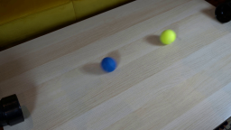
视觉工具实际返回图片 2
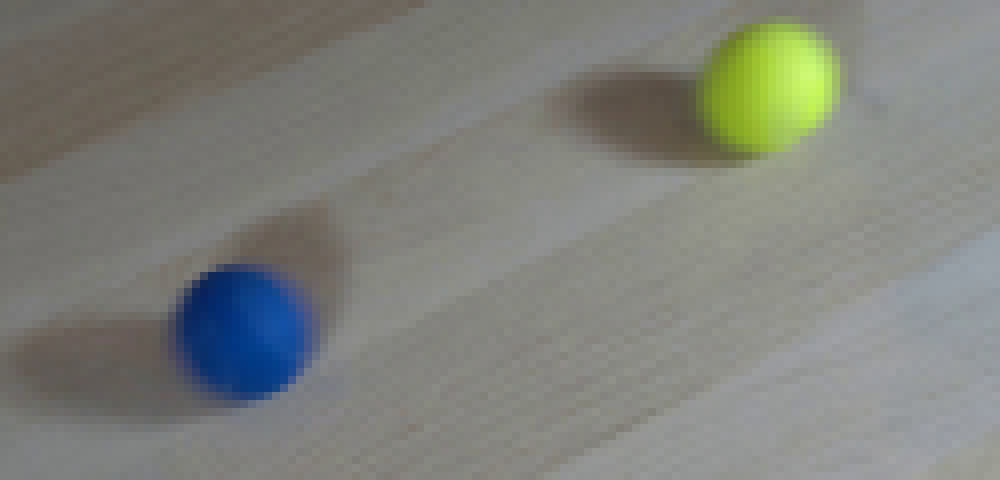
视觉工具实际返回图片 3
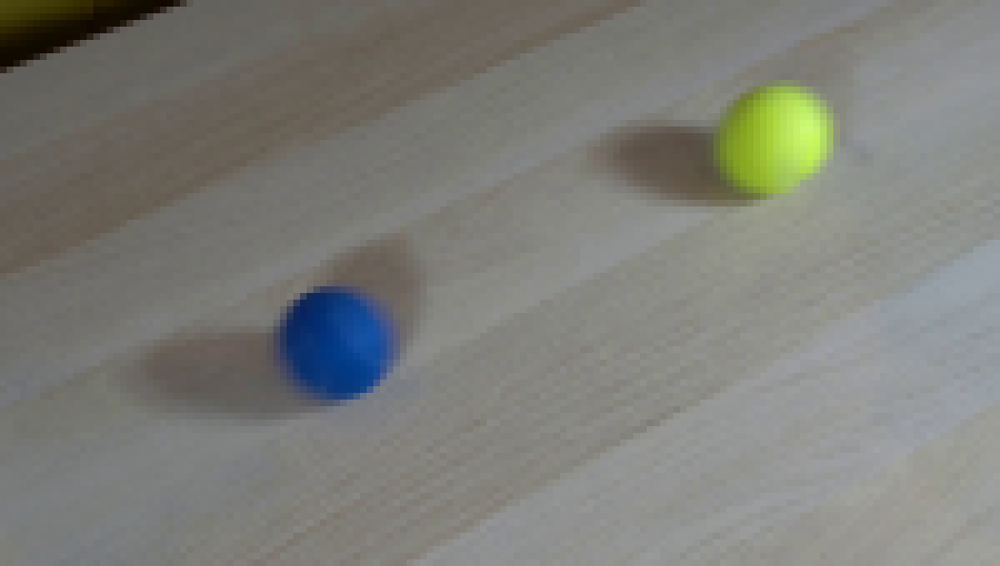
视觉工具实际返回图片 4
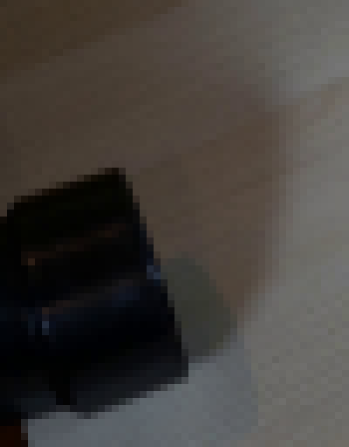
视觉工具实际返回图片 5
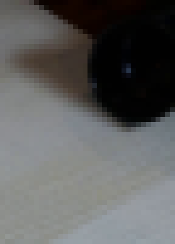
视觉工具实际返回图片 6
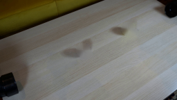
视觉工具实际返回图片 7
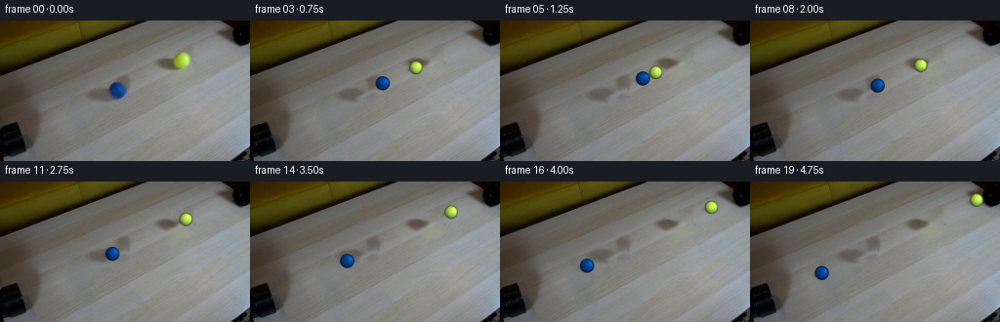
视觉工具实际返回图片 8
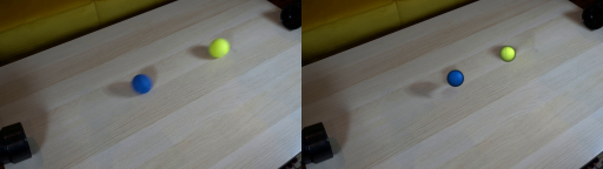
视觉工具实际返回图片 9

视觉工具实际返回图片 10
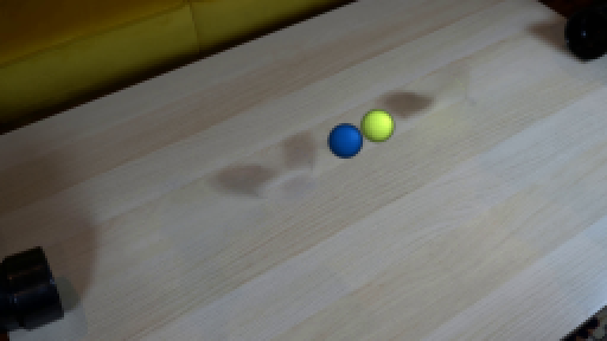
视觉工具实际返回图片 11
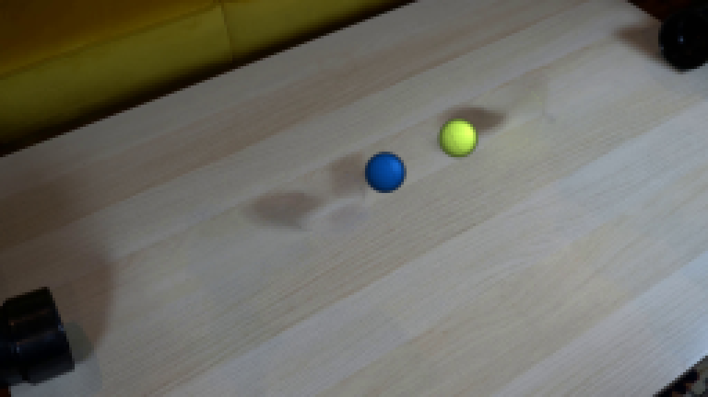
视觉工具实际返回图片 12
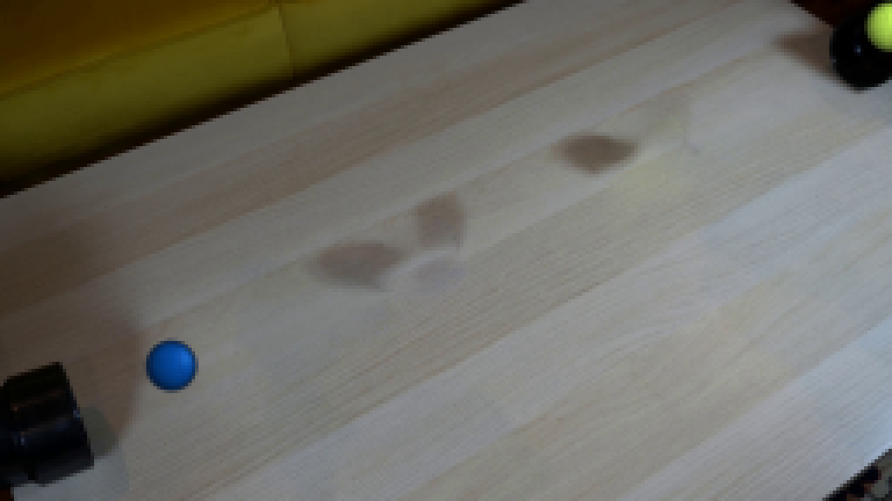
视觉工具实际返回图片 13
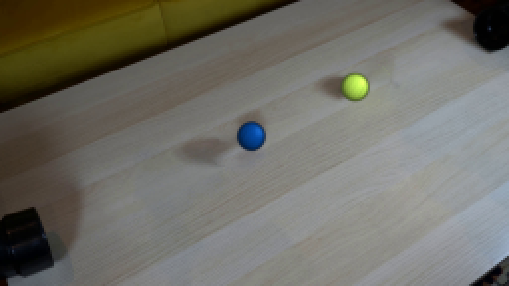
视觉工具实际返回图片 14
保存候选 7 份；完成命令 51 次；可验证图片返回 14 张。原始 API 响应与完整日志保留在本地。